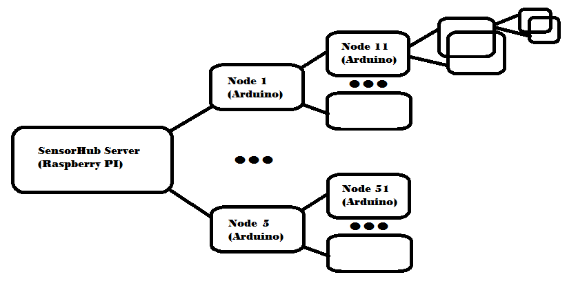
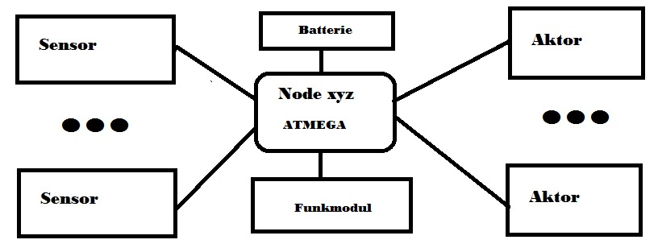

Der prinzipielle Aufbau des SensorHubs

Der prinzipielle Aufbau eines Nodes
Der Aufbau ist in seiner Topologie durch die “rf24network” Software vorgegeben. Vom Server können 6 Nodes direkt angesprochen werden, alle anderen Nodes werden über die jeweiligen Masternodes angesprochen.
Zentrale Einheit bildet ein Linux Server, in meinem Fall ein Raspberry Pi, es kann jedoch auch jeder andere Server verwendet werden. Vorraussetzung ist ein angeschlossenes, betriebsbereites Funkmodul vom Typ “nrf24l01?. Um eine bessere Reichweite zu erzielen habe ich für den Server ein Modul mit integriertem Verstärker (PA) und sepatater Antenne verwendet.
Die Verbindung zu den Nodes wird über Funkmodule im freien 2.4ghz Band realisiert.
Die Nodes werden sternförmig an den Server angeschlossen.
Meine Nodes bestehen aus selbstgebauten “Arduinos”.
Grundschaltung eines selbstgebauten “Arduinos”
Alles was hier dokumentierte ist nach bestem Wissen und Gewissen niedergeschrieben worden.
Ich übernehme keinerlei Verantwortung für Fehler oder Schäden die aus dem Gebrauch bzw. Nachbau dieses Projektes entstehen!
In diesem Projekt wurde freie Software eingesetzt. Diese Software wird von mir nicht betreut, bei Fehlern in dieser Software wenden Sie sich bitte direkt an den Programmierer. Ich freue mich darüber das diese Software frei verfügbar ist und danke hiermit den Erstellern.
Meinen Programmcode finden Sie im Github
rf24network: Download from Github – Dokumentation dazu
Arduino Software: Download from Arduino.cc
Hardware: Ich habe meine Funkmodule und die Sensoren über ein großes Internetauktionshaus mit 4 Buchstaben über Händler in China bezogen.